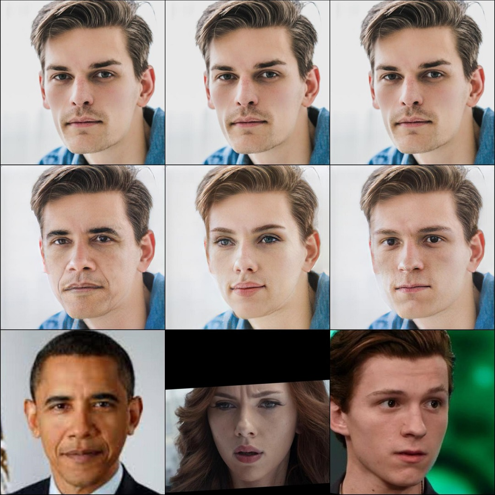
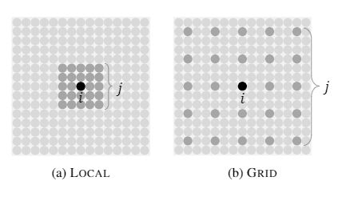

Lingzhi Li 李凌志
lilingzhi at pku dot edu dot cn
I am currently a master student at Peking University, before that I obtain my bachlor degree for Beijing Jiaotong University. I have been a research intern at MSRA's Visual Computing Group in the passed year. During my time at msra I collaborate closely with jianmin bao,Hao Yang, Dong Chen and Fang wen.
My research interests are in computer vision, machine learning, and deep learning. I'm particularly interested in the areas of both deepfake generation and deepfake detection. You can find my full cv here english/中文.
Publications


Experience
2018.08 ~ present: Research Intern in MSRA mentored by Dong Chen and Hao Yang
Awards and Honors
2018 Jane Street Electronic Trading Competition, 1st
2018 Citadel Data-Open Beijing, 2nd
2018 Merit Student Awards
2018 Data Science Bowl, Automate Nucleus Detection Chanllenge 39th/3634
2017 WWW 2018 Musical Genre Classification Challenge 5th/274
News
2019.3 Our submission ranking the #3 (when submitting)in cityscapes benchmark